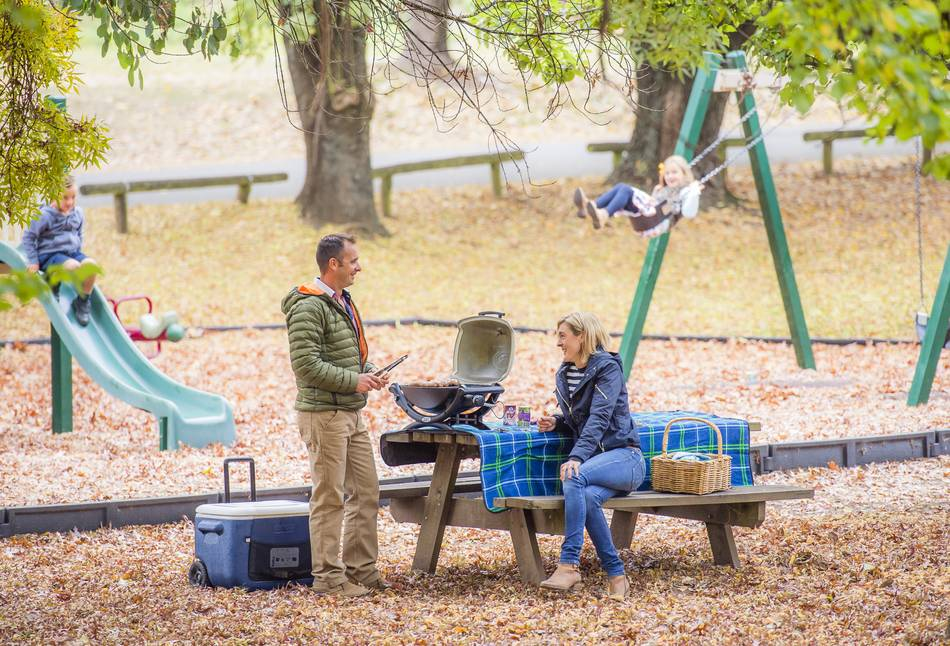
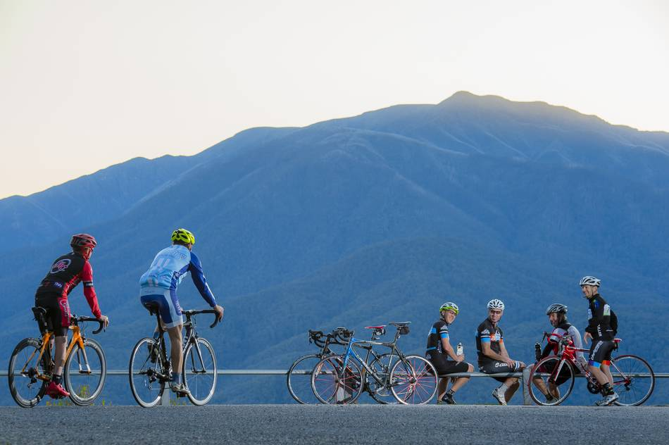
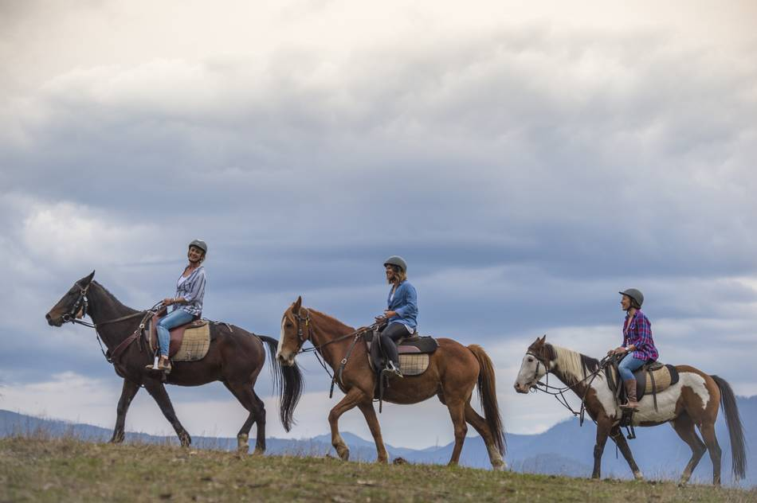
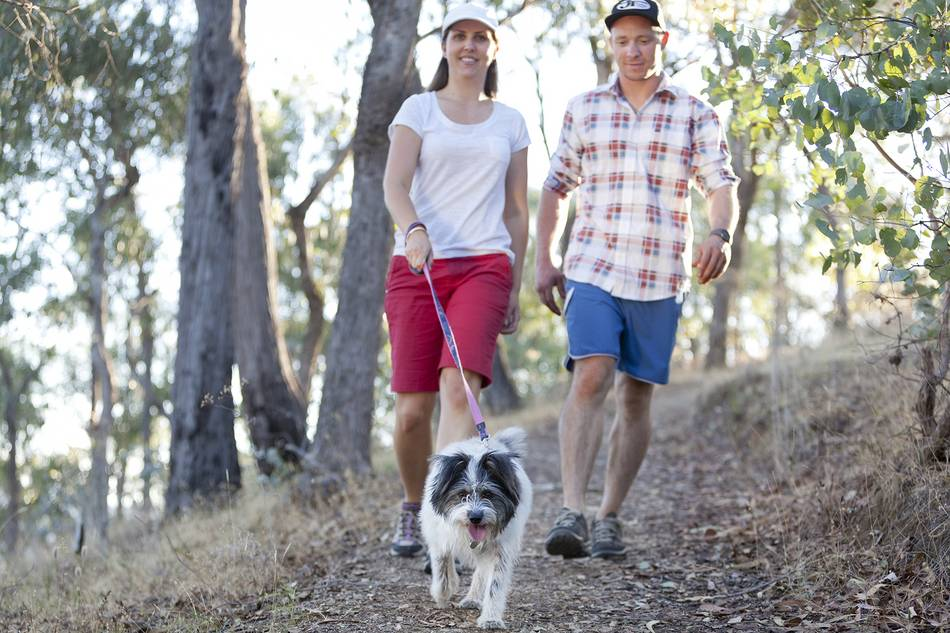

The river
200 metres of private bank on the Ovens. Swim, paddle, drift in a tube or just sit beside it.

Porepunkah · Bright · Mount Buffalo
Or nothing at all
You could fill a week without starting the car. The river, a rail trail and two wineries are all within a short walk.
Everything here is on the property or a short walk from it.
200 metres of private bank on the Ovens. Swim, paddle, drift in a tube or just sit beside it.
The Murray to Mountains Rail Trail links Bright, Beechworth and Wangaratta. Bring your bikes; there's storage here.
Feathertop Winery and Ringer Reef Winery are both close enough to walk to, and to walk home from.
King parrots at the window, platypus in the river and wallabies on the lawn at dawn. Who you might meet
The valley changes completely from one season to the next.

December to February
A cool, leafy place to be when the rest of the state is hot.

March to May
The valley is known for it, and the trees along our own bank turn too.

June to August
A quiet, affordable base for the mountains, with a warm cottage to come back to.

September to November
Bulbs, azaleas, rhododendrons and roses come out across the grounds.
For days when you do want to start the car.



Ask us when you arrive. We know who's running what this season.
Walking and cycling groups
Take a few cottages side by side, store the bikes on site and meet at the covered barbecue in the evening.

Alpine Riverside Cottages
Choose your dates to see what's free.